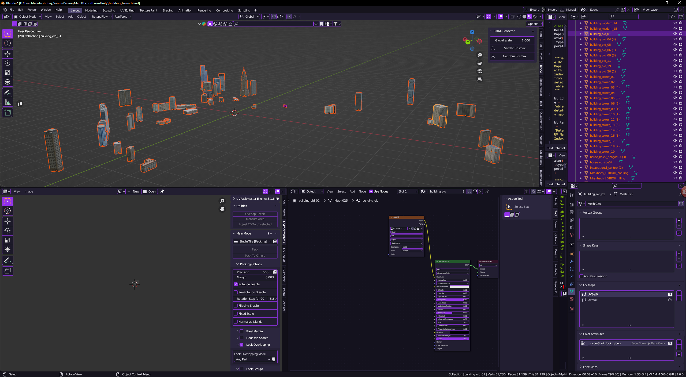
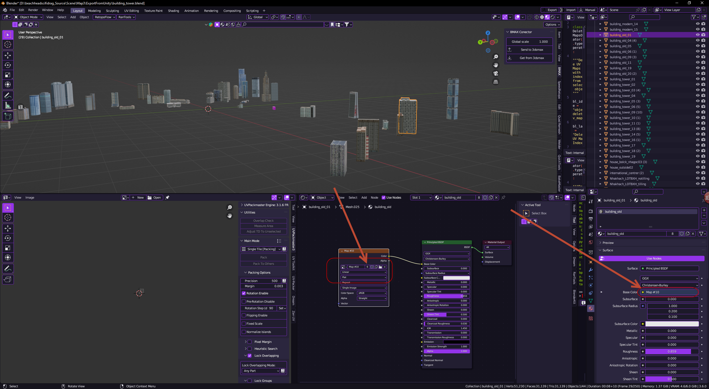
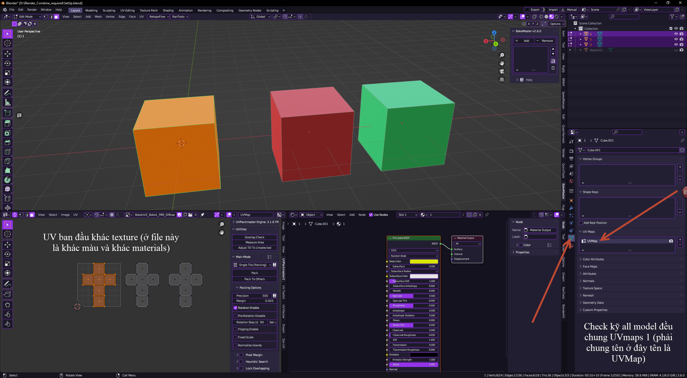
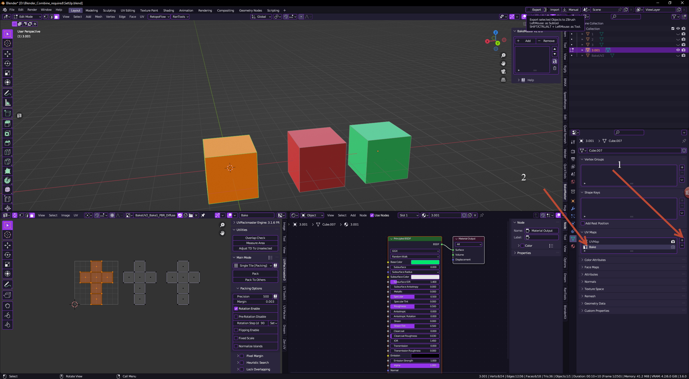
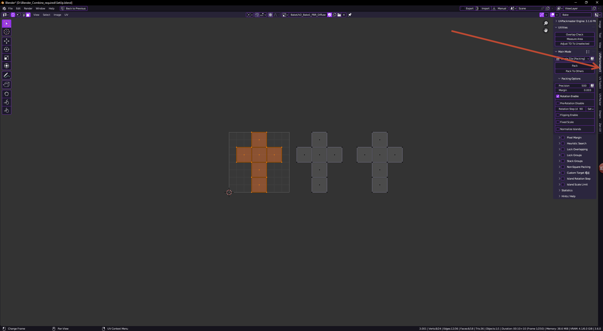
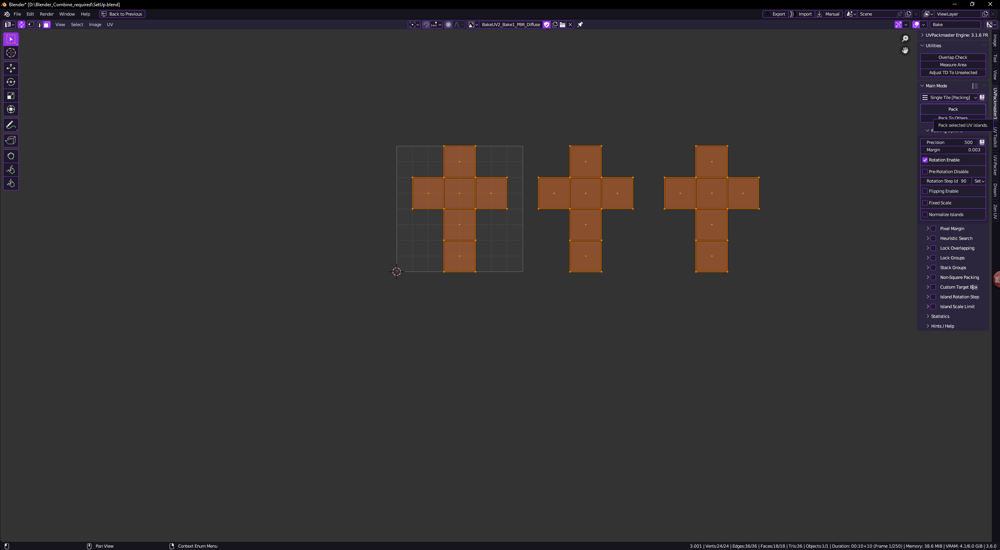
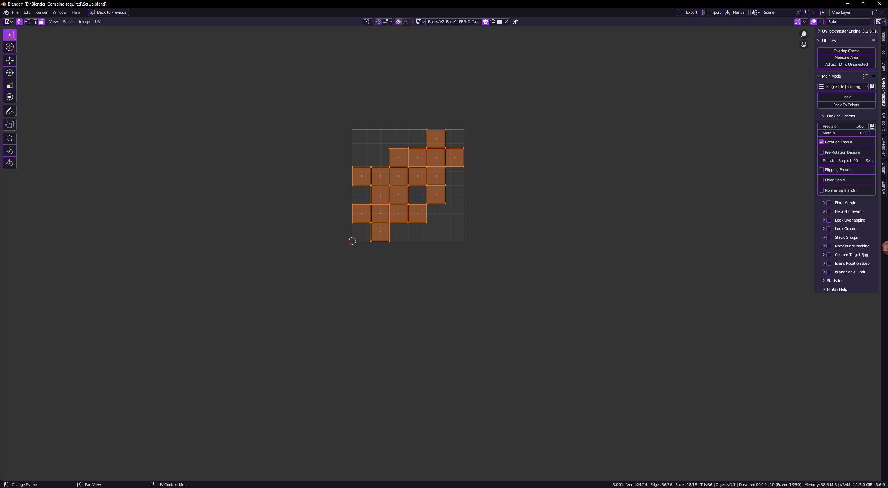
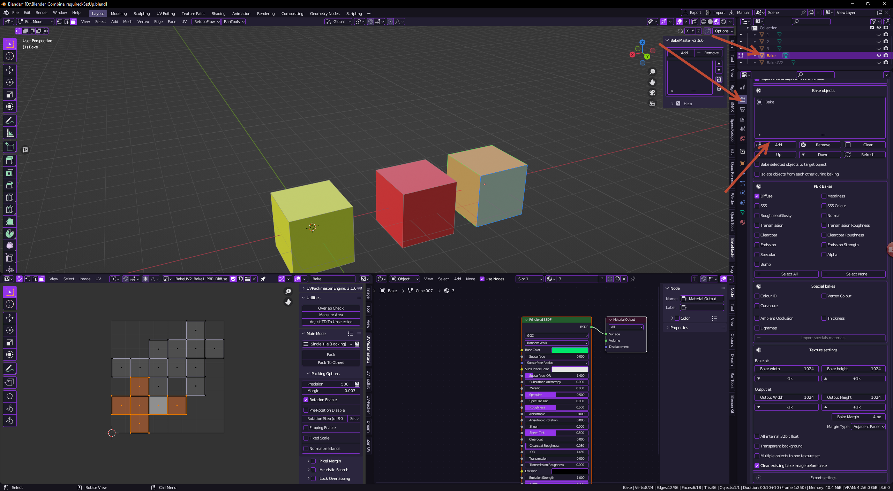
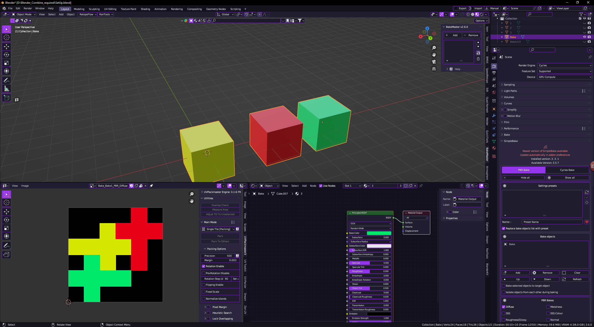

Chưa Atlas

Sau Atlas
1 hoặc nhiều mesh chung 1 material và 1 tấm texture
File Cần Thiết
Blender 3.6SimpleBake
UV_Packmaster
Cài Blender
Cài như bình thường
Tải 2 Addon
SimpleBake 3.3.1 . giữ file zip
UV_Packmaster_3.1.6.rar . Extract sẽ ra 4 File này
Dùng Win thì cài file này trước uvpm-engine-pro-3.1.6-windows-x64
Trong Blender tiến hành cài Addon
Theo hình
tới Bước 4 chọn nơi thư mục chứa file SimpleBake 3.3.1.zip
tới Bước 4 chọn nơi thư mục chứa file uvpackmaster3-addon-3.1.6.zip
Check lại có phần này chưa
Bắt đầu Atlas
Chuẩn bị All Model hoặc 1 model nhiều materials cần combine
ví dụ
trong này rất nhiều tấm texture, material và nhiều model khác

Kiểm tra từng model dẫn đúng texture chưa
Mở SimpleBake ( Addon) tại đây

Và setting như này (đủ để atlas)
Lưu ý chưa nhấn
" Bake "

Kiểm tra model và UV bước này để bake từ UVMap1 ( UV ban đầu )
nhấn + để thêm nhân lên UV đổi tên ở đây đổi tên thành Bake
Bắt đầu UV từ Bake thành 1 tấm gọn (có thể xếp tay) ở đây tôi dùng UV_Packmaster
Mở UV_Packmaster
Quét tất cả UV nhấn Pack để auto xếp UV
Kết quả UV
Tiến Hành Bake
Chọn Model đã có UV2 (Bake UV trong 1 tấm) quay về tab mũi tên thứ 2 trong hình
và Add
Tất cả Setting giữ như phía trên
Nếu không Add được thoát khỏi Edit Mode (phím Tab) và nhấn Bake
Kết Quả
Kết quả UV trong 1 tấm và đủ 3 màu
Tiến hành lưu Texture và Model Lưu ý xoá UV1(UVMap) để lấy UV2 (Bake)
Rồi Gắn